Bandera Actual (1908):La bandera de Nicaragua fue creada por Decreto Legislativo el 5 de septiembre
de 1908, al igual que el actual Escudo Nacional, siendo Presidente de la República el General José Santos Zelaya López.
Su composición es tres franjas horizontales del mismo tamaño, de tono azul cobalto, las exteriores y de color blanco la
central, en cuyo centro, figura el Escudo Nacional, está basada en la que perteneció a las Provincias Unidas de Centro de América,
la cual a su vez tenía su origen en la bandera de las Provincias Unidas del Río de la Plata, actual Argentina.
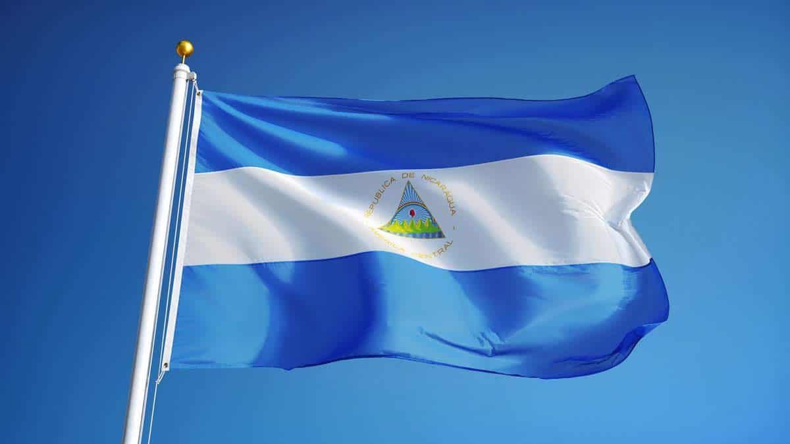
Escudo nacional de Nicaragua:El Escudo Nacional de Nicaragua fue creado, junto con la actual Bandera de
Nicaragua, por el Decreto Legislativo del 5 de septiembre de 1908, siendo Presidente de La República José Santos Zelaya López,
fijándose de modo definitivo el Escudo y la Bandera actuales de Nicaragua. Se basa en el escudo que perteneció a las
Provincias Unidas del Centro de América.

Ave Nacional:El Guardabarranco (Eumomota superciliosa) representa con gran elegancia al país,
teniendo el título de Ave Nacional de Nicaragua.
Se dedara por Decreto No. 1891, publicado en La Gaceta, Diario Oficial No. 194, del 27 de agosto de 1971, que es el
Guardabarranco, el ave nacional de Nicaragua.
El Guardabarranco, es un pájaro de tamaño pequeño, tiene alas cortas, redondas y la cola larga, con las plumas extremas
en forma de raquetas.
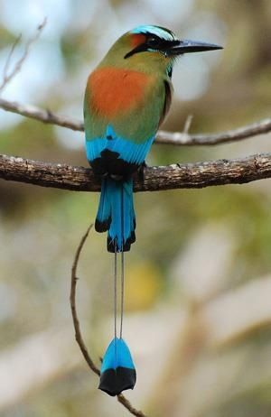
Flor Nacional:Bella y con intensa fragancia, la flor Sacuanjoche o Plumeria Rubra (en su nombre científico)
guarda en su sencilla figura significados que elogian aún más sus cualidades naturales.
Declarada Flor Nacional en 1971, esta hermosa flor de los campos, parques y jardines, cuenta con una amplia variedad en Centroamérica,
el Caribe y Asia.
Su blanco intenso la hacía preferida para la ornamentación en uniones matrimoniales y altares religiosos, donde se situaba en forma
de coronas, guirnaldas o como racimos desde el tiempo de nuestros ancestros
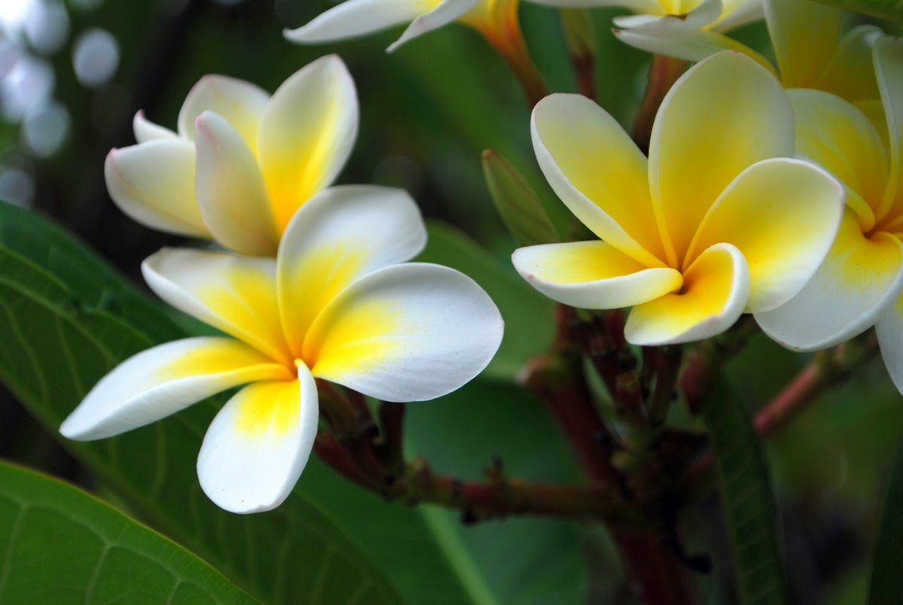
Árbol Nacional:El madroño es el Árbol Nacional de Nicaragua desde 1971. En La Gaceta,
Diario Oficial de la República de Nicaragua, número 194, aparece reproducido el Decreto Legislativo
No. 1891 por el cual se declara al madroño Árbol Nacional de Nicaragua.
A nivel nacional y en cada rincón del país podemos encontrar este árbol quien con sus colores vistosos
adorna cualquier lugar donde se encuentre.
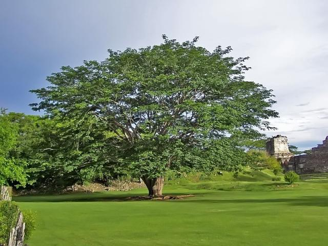
Historia de Nicaragua:Nicaragua fue poblada a la vez por los Mayas y los Nahuas, quienes ocuparon
la depresión central, y por los Miskitos (o Mosquitos), los Ramas y los Sumus, quienes se instalaron sobre la costa
del mar Caribe.
Los primeros colonos españoles conducidos por Gil Gonzáles Dávila penetraron en Nicaragua hacia el año 1520 y el país
fue agregado a la capitanería general de Guatemala. La dominación española permaneció sin embargo limitada en la costa pacífica.
La independencia fue proclamada en 1821 y, en 1823
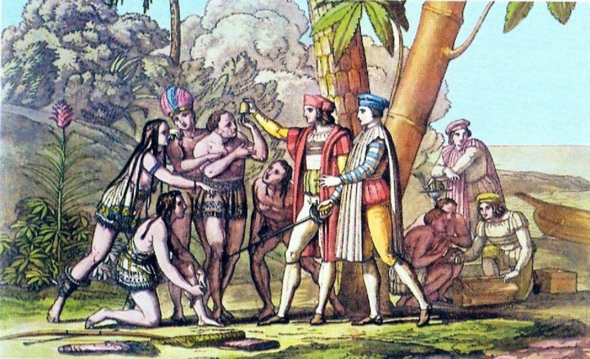
Extensión territorial:
El territorio de Nicaragua tiene una superficie aproximada de 130 494 km², constituyéndose con ello como el país
más extenso de Centroamérica y América Central insular. Limita al norte con Honduras, al sur con Costa Rica,
al oeste con el océano Pacífico y al este con el mar Caribe. En cuanto a límites marítimos, en el océano Pacífico
colinda con El Salvador, Honduras y Costa Rica; mientras que en el mar Caribe colinda con Honduras, Colombia y
Costa Rica.
Son reconocidas las lenguas de los pueblos indígenas originarios como el inglés criollo nicaragüense, misquito,
Sumu o Sumo, garífuna y rama.
Departamentos:
- Boaco
- Carazo
- Chinandega
- Chontales
- Costa Caribe Norte
- Costa Caribe Sur
- Estelí
- Granada
- Jinotega
- León
- Madriz
- Managua
- Masaya
- Matagalpa
- Nueva Segovia
- Río San Juan
- Rivas
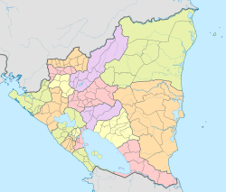
Lugares Turusticos más importantes:
Managua:
Managua es la capital del país desde 1852 y en la que viven 1.5 millones de personas. Su nombre viene del
náhuatl “managuac” que significa “rodeada de estanques” y cuenta con algunos de los mejores lugares
atractivos de Nicaragua. En el puerto Salvador Allende encontrarás los restaurantes “Los Maderos” y
“Summer Salvador Allende”, en los que podrás comer ceviche; así como bares y discotecas
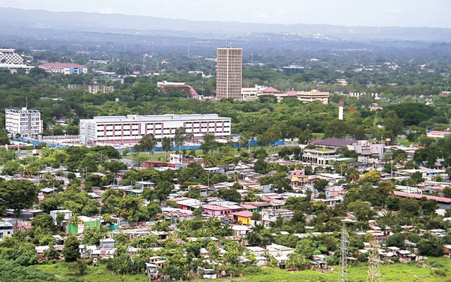
San Juan del Sur (Rivas):
San Juan del Sur está ubicado en Rivas, a dos horas de Managua. Conocido principalmente por sus costas, entre ellas Maderas
y Marsella, es de los mejores destinos de playa en Nicaragua, a pesar de sus elevados costos.
Otro sitios de interés son la estatua de Cristo y la Reserva Natural La Flor, una playa a 40 minutos del centro. Aquí
podrás ver nidos de tortugas oliváceas
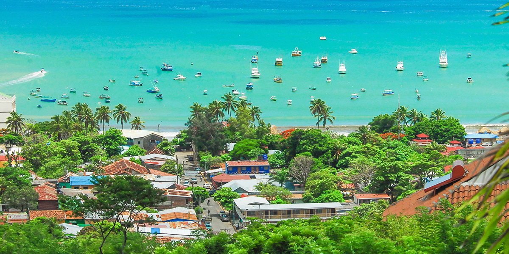
Lago Cocibolpa (Rivas):
Durante tu viaje a Nicaragua no puedes dejar de visitar el Lago Cocibolca, el segundo más grande de América Latina. Es
conocido como “Mar Dulce” por los nicaragüenses y está conformado por 365 isletas, Zapatera y Ometepe. Puedes llegar
desde el Puerto Asese en Granada. Son varios los datos curiosos que existen sobre el Lago Cocibolca, uno de los destinos
turísticos en Nicaragua, uno de ellos es que en él habitan dos especies de tiburones más agresivos del mundo, el Toro y el Sarda.
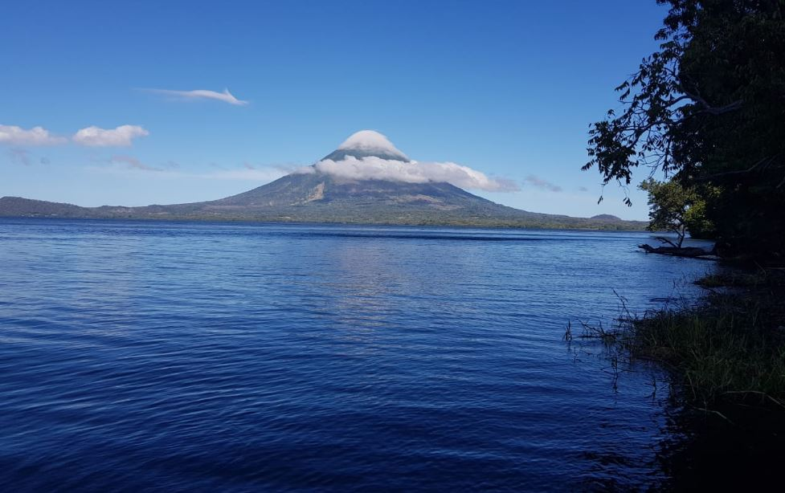
Matagalpa:
En la zona norte está el departamento de Matagalpa, uno de los más montañosos del país. Es conocido por contar con
varios lugares turísticos de Nicaragua, como la cascada del río Santa Emilia y por las Reservas Naturales de Cerro
Apante y la Selva Negra. En Matagalpa conseguirás otros sitios de interés en Nicaragua, como: la Ciudad Darío, a 50
minutos del centro, donde se ubica la casa natal del poeta Rubén Darío, además de las lagunas de Moyuá y Las Playitas
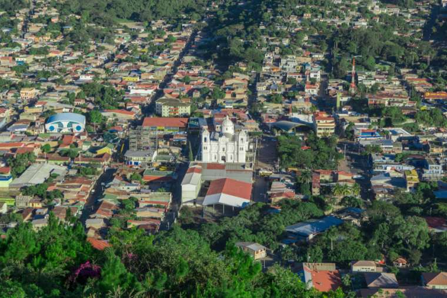
Volcán Concepción (Rivas):
Uno de los sitios para conocer en Nicaragua es el volcán Concepción, al norte de la Isla Ometepe. Si deseas lanzarte
a la aventura y escalarlo debes estar en óptimas condiciones físicas, por lo empinado de sus cuestas y la altura de la caldera.
El volcán debe estar en tu itinerario de vacaciones en Nicaragua, porque además de ser uno de los más altos, su forma se aproxima
a la de un cono perfecto
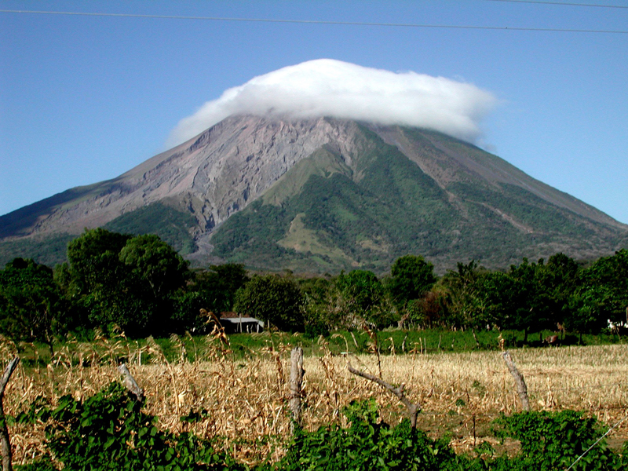